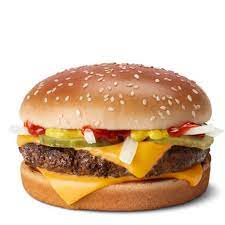

Burger

Description
A great burger is born from a perfectly grilled, seasoned patty, sandwiched between two gently toasted buns.
Adorned with a medley of fresh veggies and a dollop of condiments,
it's a culinary symphony that transforms a simple dish into a timeless, mouthwatering delight.
Ingredients
- 1 pound ground beef (80% lean, 20% fat for optimal juiciness)
- Salt and pepper to taste
- 4 hamburger buns
- Lettuce leaves
- Sliced tomatoes
- Sliced red onions
- Pickle slices
- Cheese slices (optional)
- Mayonnaise
- Ketchup
- Mustard
Steps
- Preheat your grill or stovetop pan over medium-high heat.
- While the grill is heating, divide the ground beef into four equal portions and shape them into patties. Season each patty with salt and pepper.
- Place the patties on the preheated grill or pan and cook for about 4-5 minutes per side, or until they reach your desired level of doneness.
- In the last minute of cooking, you can add a slice of cheese to each patty if you're making cheeseburgers, letting it melt.
- While the patties are cooking, cut the hamburger buns in half and lightly toast them on the grill or in a toaster.
- Assemble the burgers by placing a cooked patty on the bottom half of each bun.
- Add lettuce, tomato slices, red onions, and pickles on top of the patties.
- Spread mayonnaise, ketchup, and mustard on the top half of the buns.
- Place the top bun over the toppings, creating a delicious burger sandwich.
- Serve immediately and enjoy your homemade classic burger!